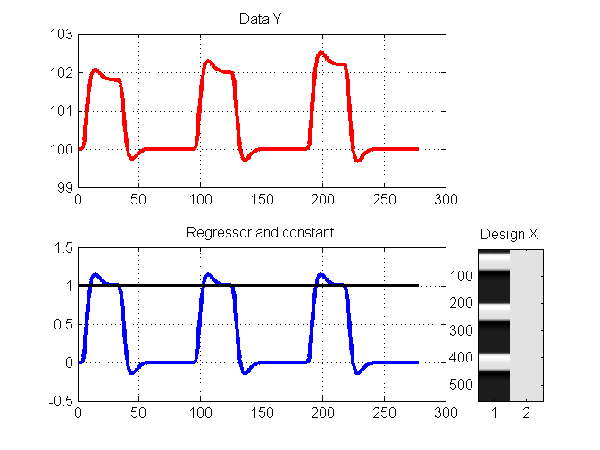
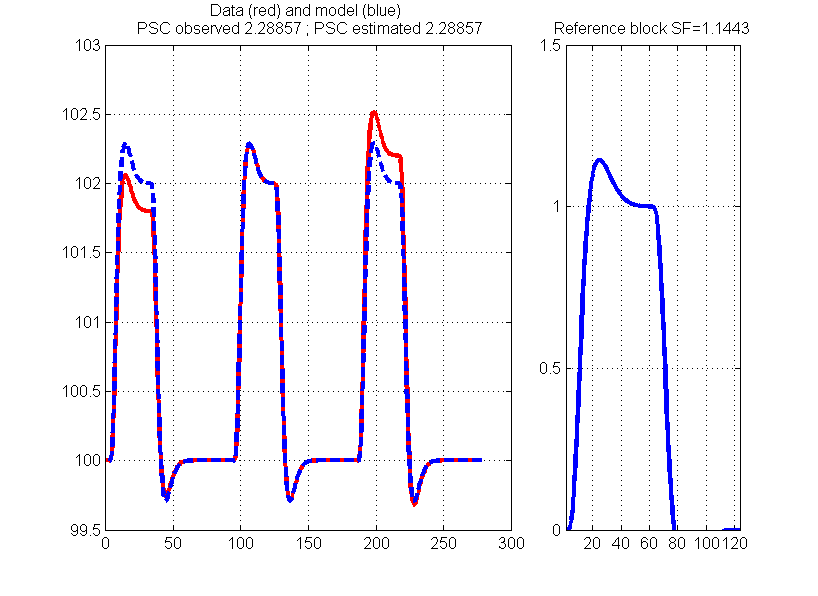
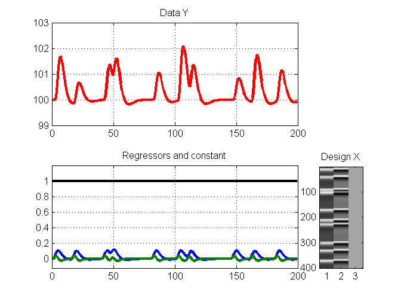
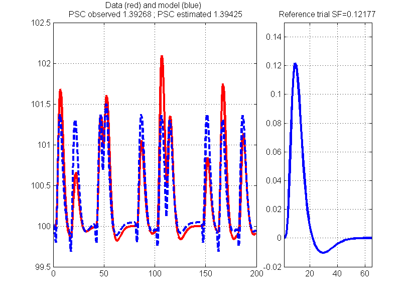

Computing Percentage Signal Change
This Matlab code, is a simple demonstration of how to compute percentage signal change using the GLM parameter estimates.
Contents
Background
% We can estimate the percentage signal change using the parameter or contrast % images obtained by the GLM. In the following I use some function from SPM % but the logic applies to most software (although with AFNI it is different % because the temporal mean is removed from the data before the GLM and thus % the interpretation of the constant is different) % % 1. Beta parameter values obtained from the GLM are only meaningful if the % design matrix is non singular (http://en.wikipedia.org/wiki/Invertible_matrix) % i.e. a combination of regressors cannot equal another regressor. This usually % doesn't happen after convolution by the hrf. However, it is still possible % that the matrix is badly scaled - inv(X)*X ~= I. This implies that the solution % is unstable and again beta values are meaningless. % % 2. If you have rest periods (block designs) or null events (event related) % then simply do not model those, making the design matrix invertible and all % is fine. If you don't have those periods or events or if you model them, you % have to use contrasts. % % 3. The sampling scheme (for both blocks and events) matters because it % influences how the regressors are built. This means that the model is % constructed at high resolution and then downsampled to your TR. Therefore % the design matrix is 1. not allways scaled to 1 (depends on the software) and % 2. the maximum of the hrf model can be missed after downsampling. This two % facts entails that a scaling factor must be applied to compute the PSC. % The simplest, best (?) way to obtain this scaling factor is to build a % reference block or trial at high resolution and take its maximum. % Reference_block = conv(ones(1,duration),SPM.xBF.bf(:,1))'; % duration = time in sec / SPM.xBF.dt % Reference_trial = SPM.xBF.bf * ones(1,size(SPM.xBF.bf,2))' % % 4. For event related designs, the hrf model doesn't fit accuratly the data % most of the time. Adding derivatives allows capturing much better the true % signal (or using other basis set like FLOBs in FLS). One issue is that 1. % this becomes difficult to use all of these functions at the second level % and 2. only their combination capture the data and parameters for the hrf % are biased in magnitide. However, we can correct this with simple maths. % One can also generate maps of boosted parameters (see spm_hrf_boost on my % GitHib https://github.com/CPernet/SPM-U-) and directly use them (wit the % SF) to generate percentages % Initial parameters for simulations % hrf model using SPM function % this information is stored in the SPM.mat clear all xBF.dt = 0.5; xBF.name = 'hrf (with time derivative)'; xBF.length = 32; xBF.order = 1; xBF = spm_get_bf(xBF);
Block design
alternate a single experimental conditions with ~1.1% change relative to baseline 100
% make up fake data Y and the design X scale = [1.8, 2 2.2]; % for a duration is 30 sec, with dt = 0.5 we need 60 points Y = [zeros(1,5) conv(ones(1,60),xBF.bf(:,1))'.*scale(1) zeros(1,60) ... conv(ones(1,60),xBF.bf(:,1))'.*scale(2) zeros(1,60) ... conv(ones(1,60),xBF.bf(:,1))'.*scale(3) zeros(1,60)]; Y = ones(length(Y),1).*100+Y'; Regressor = [zeros(1,5) conv(ones(1,60),xBF.bf(:,1))' zeros(1,60) ... conv(ones(1,60),xBF.bf(:,1))' zeros(1,60) ... conv(ones(1,60),xBF.bf(:,1))' zeros(1,60)]; X = [Regressor' ones(length(Y),1)]; figure; BFtime = [0:xBF.dt:(length(Y)-1)*xBF.dt]; subplot(2,5,[1:4]); plot(BFtime,Y,'r','LineWidth',3); grid on; title('Data Y'); subplot(2,5,[6:9]); plot(BFtime,X(:,1),'LineWidth',3); hold on; plot(BFtime,X(:,2),'k','LineWidth',3); grid on; title('Regressor and constant') subplot(2,5,10); imagesc(X); colormap('gray'); title('Design X') % the GLM solution beta and the model Yhat beta = pinv(X)*Y; Yhat = X*beta; % True Percentage Signal Change block1=max(Y(7:110)); block2=max(Y(171:294)); block3=max(Y(355:498)); PSC_Y = mean([block1 block2 block3]) - 100; % ------------------------- % percentage signal change % ------------------------- % 1 the reference block is Reference_block = conv(ones(1,60),xBF.bf(:,1))'; % hrf*30 sec % 2 compute PSC using the scaling factor SF SF = max(Reference_block); PSC_estimated = beta(1)*100/beta(2)*SF; figure; subplot(1,3,[1 2]); plot(BFtime,Y,'r','LineWidth',3); hold on plot(BFtime,Yhat,'--','LineWidth',3); grid on; mytitle = sprintf('Data (red) and model (blue) \n PSC observed %g ; PSC estimated %g', PSC_Y,PSC_estimated); title(mytitle); subplot(1,3,3); plot(Reference_block,'LineWidth',3); title(['Reference block SF=' num2str(SF)]); axis([1 length(Reference_block) 0 1.5]), grid on
 
Event related design with time delay (ie using a derivative)
% make up fake data Y and the design X scale = [16 7 13 14 10 20 14 8 17 11]; onsets = [1 31 81 93 161 201 218 291 321 361]; Y = zeros(500,1); % 250 sec sample at 2Hz X = zeros(500,1); for i=1:10 Y(onsets(i)+4) = scale(i); X(onsets(i)) = 1; end Y = conv(Y,xBF.bf(:,1)); Y = Y(1:400)+100; SS(:,1) = conv(X,xBF.bf(:,1)); SS(:,2) = conv(X,xBF.bf(:,2)); x = spm_orth(SS); X = [x(1:400,:) ones(400,1)]; figure; BFtime = [0:xBF.dt:(length(Y)-1)*xBF.dt]; subplot(2,5,[1:4]); plot(BFtime,Y,'r','LineWidth',3); grid on; title('Data Y') subplot(2,5,[6:9]); plot(BFtime,X(:,[1 2]),'LineWidth',3); hold on plot(BFtime,X(:,3),'k','LineWidth',3); grid on; title('Regressors and constant');axis([0 200 -0.12 1.2]) subplot(2,5,10); imagesc([zscore(X(:,[1 2])), X(:,3)]); colormap('gray'); title('Design X') % the GLM solution beta and the model Yhat beta = pinv(X)*Y; Yhat = X*beta; % True Percentage Signal Change for e=1:10 index = onsets(e); if e < 10 index2 = onsets(e+1)+4; max_Y(e) = max(Y(index:index2)); else max_Y(e) = max(Y(index:end)); end end PSC_Y = mean(max_Y) - 100; % ------------------------- % percentage signal change % ------------------------- % 1 Comnpute the refreence trial Reference_trial = xBF.bf * ones(1,size(xBF.bf,2))'; % use all basis functions % 2 compute PSC using the scaling factor SF and H, the corrected magnitude % of the hrf (corrected for the time delay) SF = max(Reference_trial); H = (sqrt(((beta(1)^2)*sum(X(:,1).^2))+((beta(2)^2)*sum(X(:,2).^2))))*sign(beta(1)); PSC_estimated= H*100./beta(3)*SF ; figure; subplot(1,3,[1 2]); plot(BFtime,Y,'r','LineWidth',3); hold on plot(BFtime,Yhat,'--','LineWidth',3); grid on; mytitle = sprintf('Data (red) and model (blue) \n PSC observed %g ; PSC estimated %g', PSC_Y,PSC_estimated); title(mytitle); subplot(1,3,3); plot(Reference_trial,'LineWidth',3); title(['Reference trial SF=' num2str(SF)]); axis([1 length(Reference_trial) -0.02 0.15]), grid on 